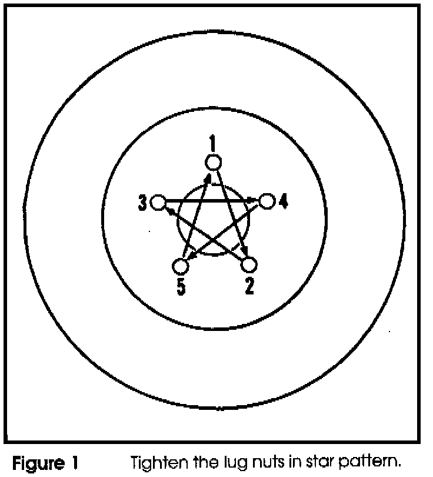
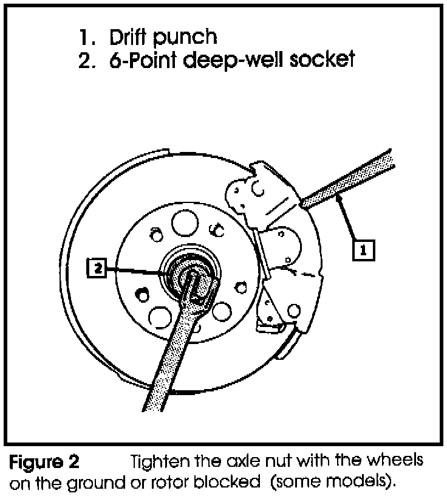
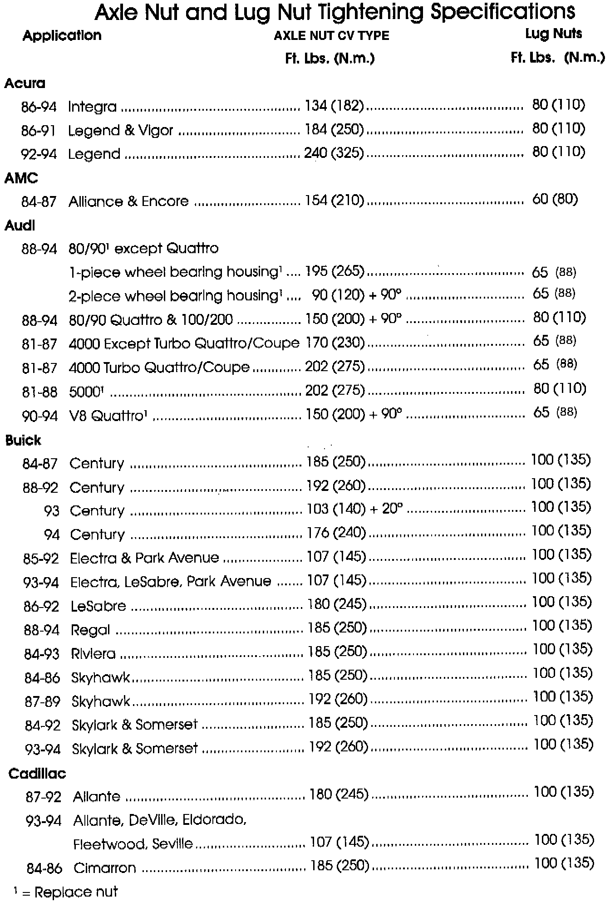
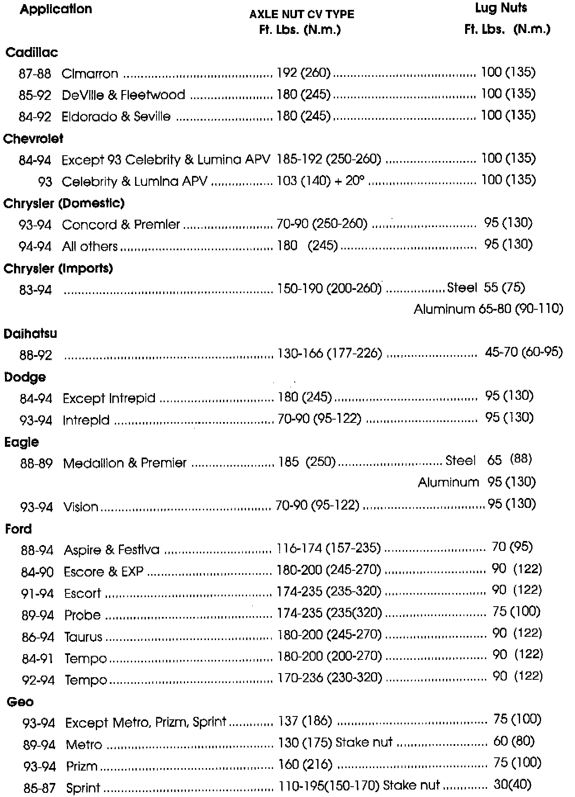
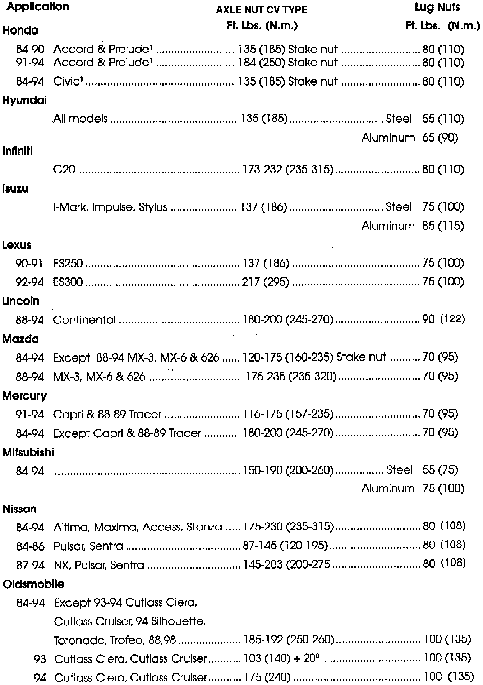
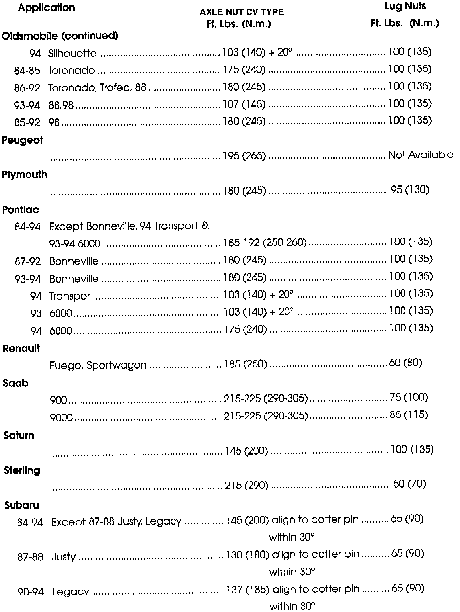
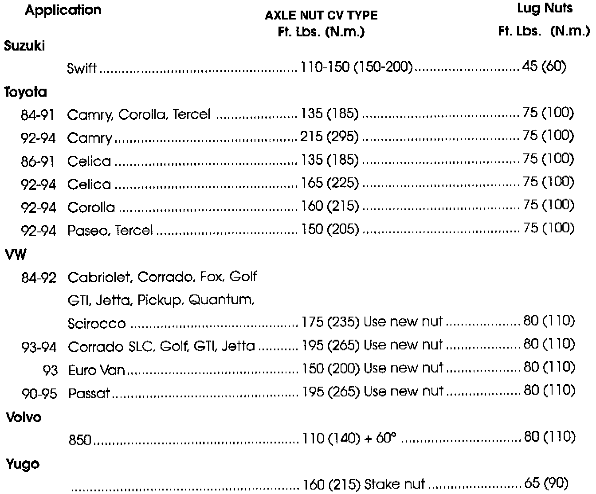

A/T - Drive Axle and Wheel Lug Nut Torque Specifications
TECHNICAL BULLETIN # 294DATE: 1995
TRANSMISSION: General
SUBJECT: Drive Axle and Wheel Lug Nut Torque
APPLICATION: Service information
AXLE AND LUG NUT SERVICE INFORMATION
It is critical to tighten the axle and lug nuts to factory specifications.
Important:
The following charts contain both DRIVE AXLE NUT and WHEEL LUG NUT tightening values. Make certain the correct tightening torque is used by referring to the chart headings.
WARNING
If the factory tightening specifications are not followed, bearing life will be shortened or mechanical loads will not be spread evenly.
^ Install axle(s) and wheel(s).
^ Install nuts and hand tighten.
^ Lower vehicle until wheels begin to touch the ground.


^ Using figures one and two, tighten nuts to specifications illustrated in the following tables.
Note
Some vehicles use torque-to-yield bolts. These bolts should be tightened an additional amount beyond the listed torque specification. The extra amount is listed in degrees.

Acura/ AMC/ Audi/ Buick/ Cadillac

Cadillac/ Chevrolet/ Chrysler/ Daihatsu/ Dodge/ Eagle/ Ford/ Geo

Honda/ Hyundai/ Infiniti/ Isuzu/ Lexus/ Lincoln/ Mazda/ Mercury/ Mitsubishi/ Nissan/ Oldsmobile

Oldsmobile/ Peugeot/ Plymouth/ Pontiac/ Renault/ Saab/ Saturn/ Sterling/ Subaru

Suzuki/ Toyota/ VW/ Volvo/ Yugo